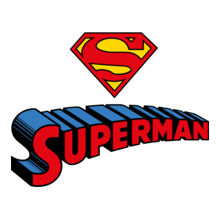
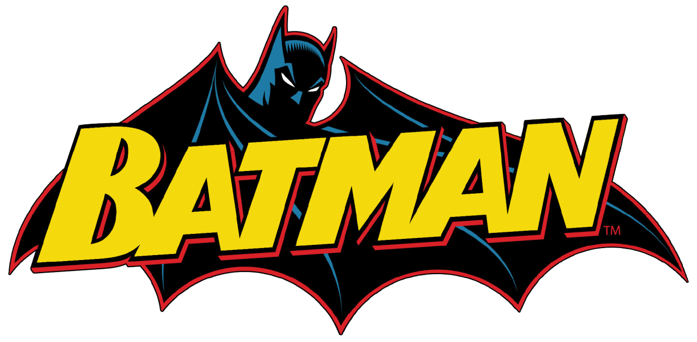
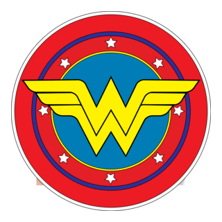
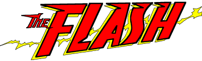
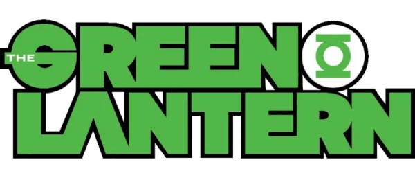
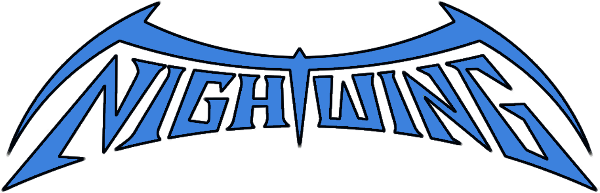
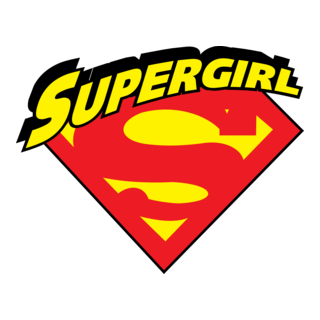
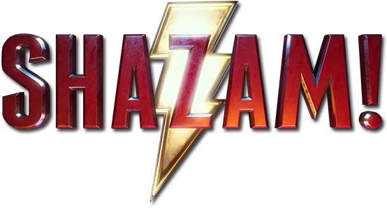

Superman, cuyo nombre kryptoniano es Kal-El y en la Tierra es conocido como Clark Kent, es uno de los héroes más importantes y reconocidos de DC Comics. Fue enviado desde el planeta Krypton antes de su destrucción y criado por Jonathan y Martha Kent en Smallville, donde aprendió los valores que definirían su vida. Aunque posee habilidades extraordinarias como superfuerza, vuelo e invulnerabilidad, su mayor cualidad es su compasión por los demás. Entre las personas más importantes de su vida se encuentran Lois Lane, periodista del Daily Planet y el amor de su vida, Jimmy Olsen, uno de sus amigos más fieles, y Supergirl, su prima kryptoniana. También mantiene una estrecha amistad con héroes como Batman y Wonder Woman, junto a quienes protege el mundo como miembro de la Justice League. La principal motivación de Superman es ayudar a las personas y utilizar sus poderes para hacer del mundo un lugar mejor. Cree firmemente en la justicia, la bondad y la capacidad de las personas para superar cualquier dificultad. Por eso suele ser visto como un símbolo de esperanza, ya que inspira a otros a nunca rendirse y a actuar correctamente incluso cuando las circunstancias son adversas. Su famoso emblema representa precisamente esa esperanza, convirtiéndolo en una figura admirada tanto por héroes como por ciudadanos comunes.

Batman es Bruce Wayne, un millonario de Gotham City que se convierte en vigilante después de ver cómo asesinan a sus padres cuando era niño, ese trauma lo marca profundamente y lo lleva a tomar una decisión extrema dedicar su vida a eliminar el crimen en Gotham City. Su motivación principal no es solo venganza sino evitar que otros sufran lo mismo y por eso crea la identidad de Batman una figura que representa el miedo para los criminales y la justicia para los inocentes aunque él mismo no tenga superpoderes. En su vida son muy importantes varias personas como su mayordomo y figura paterna Alfred Pennyworth que lo cuida y lo guía, el comisionado James Gordon que es su contacto dentro de la policía de Gotham y los distintos Robin; Dick Grayson (el que comenzo todo), Jason Todd, Tim Drake y su hijo biologivo Damian Wayne. Además de otros miembros de su entorno como Barbara Gordon (Anteriormente batgirl) hija del comisionado la cual ayuda a Nightwing y Batman en sus misiones bajo el nombre de "Oraculo". Su equipo es muy avanzado y tecnológico ya que usa el Batmóvil el Batitraje con armadura resistente dispositivos como batarangs ganchos de agarre y sistemas de detección además de la Batcueva donde planifica sus operaciones investiga casos y guarda todo su equipo. Enfrenta a criminales muy peligrosos como el Joker que representa el caos puro Bane que es fuerza e inteligencia estratégica y Two Face que representa la dualidad entre justicia y azar. En resumen Batman es un héroe que usa su dinero, inteligencia, entrenamiento y tecnología para proteger Gotham impulsado por el trauma de su infancia y por su idea de justicia absoluta

Wonder Woman es una superheroína y su identidad real es Diana de Themyscira, una princesa de las amazonas, una civilización de guerreras que viven aisladas en una isla oculta llamada Themyscira. Desde su origen, fue entrenada como una de las combatientes más fuertes de su pueblo, con una educación basada en la disciplina, el combate y también en ideales de justicia y equilibrio. Abandona Themyscira cuando entra en contacto con el mundo de los humanos. Su decisión no es por conquista ni guerra, sino por ayudar y proteger a la humanidad, especialmente en tiempos de conflicto. En muchas historias, su llegada al “mundo exterior” la pone en contacto con la Primera Guerra Mundial o con conflictos modernos, dependiendo del cómic o la película. Wonder Woman es conocida por sus valores, que son uno de sus rasgos más importantes. Representa la verdad, la paz, la compasión y la igualdad. Aunque es una guerrera extremadamente poderosa, no busca la violencia como primera opción, sino que intenta resolver los conflictos con justicia. Su símbolo más característico es el Lazo de la Verdad, que obliga a quien lo usa a decir la verdad, lo que refuerza su conexión con la honestidad y la justicia. En su vida dentro del mundo humano, establece relaciones importantes. Uno de los más conocidos es Steve Trevor, un piloto militar que suele ser su primer contacto con la humanidad fuera de Themyscira y que influye mucho en su decisión de proteger el mundo. También es hija de la reina Hipólita, quien es una figura clave en su origen y en su formación como guerrera. Dentro del universo de DC, Wonder Woman forma parte de la Justice League, junto con Batman, Superman, Flash y otros héroes principales. En este equipo cumple un rol central como estratega y como símbolo moral, muchas veces equilibrando las posturas más extremas de sus compañeros. Su relación con Batman y Superman es especialmente importante, ya que suelen ser considerados el “trío principal” de la liga.

Flash es el nombre de varios superhéroes del universo de DC Comics. El más conocido es Barry Allen, aunque también han llevado el título otros personajes como Wally West y Jay Garrick. Barry Allen es un científico forense que trabaja para la policía. Su vida cambia cuando un accidente en su laboratorio, causado por un rayo y químicos, lo expone a una energía llamada Fuerza de la Velocidad. A partir de eso obtiene la capacidad de moverse a velocidades sobrehumanas. Flash no solo corre muy rápido, sino que su conexión con la Fuerza de la Velocidad le permite hacer cosas como moverse entre dimensiones, viajar en el tiempo (aunque esto suele causar problemas), y reaccionar a una velocidad casi imposible de percibir. Sus valores principales están ligados a la responsabilidad y la esperanza. A diferencia de otros héroes más oscuros, Flash suele representar la idea de que siempre se puede ayudar a los demás y cambiar el destino con acciones rápidas y correctas. Es un miembro clave de la Justice League, junto con Batman, Superman y Wonder Woman. Dentro del equipo, su papel suele ser el de mensajero, explorador y apoyo táctico por su velocidad extrema. Personas importantes en su vida incluyen a Iris West, su pareja en muchas versiones, y otros velocistas como Wally West, que también toma el manto de Flash en distintas etapas de la historia. Flash es uno de los héroes más importantes de DC porque su poder no es solo físico, sino que afecta directamente al tiempo y al universo entero.

Green Lantern es un título que usan varios héroes del universo DC Comics. No es una sola persona, sino un grupo de portadores de un anillo especial. El más conocido es Hal Jordan. Hal Jordan es un piloto de aviones que es elegido por un anillo de poder perteneciente a los Green Lantern Corps, una organización intergaláctica que protege el universo. El anillo lo elige porque considera que tiene una gran fuerza de voluntad. El anillo es la clave del poder de Green Lantern. Funciona con la fuerza de la voluntad del usuario y le permite crear construcciones de energía sólida con su imaginación. Cuanto más fuerte es la voluntad, más poder tiene el anillo. Los Green Lantern Corps son como una especie de policía del espacio, divididos en sectores del universo. Cada sector tiene varios guardianes que mantienen el orden y enfrentan amenazas cósmicas. Hal Jordan es uno de los más importantes porque ha tenido historias donde se convierte en uno de los Green Lantern más poderosos, pero también ha pasado por momentos difíciles donde pierde el control o se enfrenta a su propio lado oscuro. Otros Green Lantern importantes son John Stewart, Guy Gardner y Kyle Rayner, cada uno con su propia personalidad y forma de usar el anillo. Sus valores están basados en la voluntad, el coraje y la responsabilidad. A diferencia de otros héroes que dependen de la fuerza física, Green Lantern depende totalmente de su mente y su capacidad de imaginar y sostener su poder. Es un miembro importante de la Justice League y uno de los héroes más importantes del universo cósmico de DC.

Nightwing es un superhéroe del universo DC Comics. Su identidad real es Dick Grayson, el primer Robin, es decir, el compañero original de Batman. Dick Grayson empezó como un joven acróbata de circo que pierde a sus padres en un accidente/crimen. Batman lo adopta y lo entrena como su compañero, convirtiéndose en Robin. Con el tiempo, ya de adulto, decide dejar de ser Robin para tener su propia identidad como héroe independiente y adopta el nombre de Nightwing. Nightwing es un vigilante que protege la ciudad de Blüdhaven, una ciudad cercana a Gotham pero aún más corrupta y peligrosa. A diferencia de Batman, que trabaja más en las sombras y con miedo como herramienta, Nightwing tiene un estilo más cercano a la gente, más social y optimista. Sus habilidades vienen del entrenamiento con Batman: es un combatiente experto, acróbata de nivel olímpico y estratega muy inteligente. No tiene superpoderes, pero su disciplina y entrenamiento lo hacen extremadamente efectivo en combate. En cuanto a valores, representa la independencia, la superación personal y el equilibrio entre la oscuridad y la esperanza. Es como la evolución de Batman en una versión más humana y menos atormentada al punto de que Bruce diga que batman debe ser mas como el. Personas importantes en su vida incluyen a Batman (Bruce Wayne), quien fue su mentor y figura paterna mas alla de todos los desacuerdos. otros miembros de la Bat-Familia como Alfred como otra figura paterna el cual le ayudo en no ser como Bruce, Barbara su interes amoroso en gran parte de su historia,Jason,Tim y Damian como sus hermanos, los titans el equipo que lidera desde que era robin y en algunas historias también mantiene vínculos con la Justice League. Nightwing es considerado uno de los héroes más completos de DC porque combina la inteligencia de Batman con un enfoque más humano y positivo hacia la justicia.

Supergirl es una superheroína del universo DC Comics. Su nombre real más conocido es Kara Zor-El, una kryptoniana que es prima de Superman. Kara nació en Krypton, el mismo planeta de Superman. Cuando su mundo estaba por ser destruido, su familia la envía a la Tierra para protegerla y para que cuide a su primo Kal-El (Superman). Sin embargo, su nave se desvía en el espacio y llega a la Tierra muchos años después, cuando Superman ya es adulto. Al igual que Superman, Supergirl obtiene sus poderes gracias al Sol amarillo de la Tierra. Esto le da fuerza sobrehumana, velocidad, vuelo, visión de calor, visión de rayos X, aliento congelante y una gran resistencia. En muchas versiones, llega a ser incluso más inestable al principio porque tiene que adaptarse a un mundo completamente nuevo. Sus valores están basados en la esperanza, la identidad y la superación personal. Muchas historias de Supergirl se centran en su lucha por encontrar su lugar en la Tierra, ya que no creció allí como Superman, lo que hace que su adaptación sea más difícil. Supergirl también tiene una relación muy importante con Superman, quien actúa como su guía y protector en muchas versiones, aunque ella poco a poco se convierte en una heroína independiente. En el universo DC, ha tenido diferentes roles, desde heroína solitaria hasta miembro de equipos como la Justice League o grupos de héroes kryptonianos. Su historia suele representar la idea de que no solo se trata de de dónde vienes, sino de lo que eliges ser.

Shazam es un superhéroe del universo DC Comics. Su identidad principal es Billy Batson, un chico joven que obtiene poderes mágicos al decir la palabra “Shazam”. La palabra “Shazam” no es solo un nombre, sino un acrónimo de seis figuras míticas que le otorgan sus poderes: S de Salomón (sabiduría), H de Hércules (fuerza), A de Atlas (resistencia), Z de Zeus (poder mágico y energía), A de Aquiles (valentía), M de Mercurio (velocidad) Cuando Billy dice “Shazam”, su cuerpo se transforma en un adulto con poderes sobrehumanos, convirtiéndose en un héroe extremadamente fuerte, casi al nivel de Superman en algunos aspectos. Billy Batson es un huérfano que, por su buen corazón, es elegido por un antiguo mago llamado Shazam para heredar estos poderes y convertirse en su campeón. Aunque tiene un cuerpo adulto cuando se transforma, sigue siendo un niño en personalidad, lo que genera situaciones más ligeras y a veces cómicas. Sus valores están ligados a la bondad, la responsabilidad y la importancia de usar el poder para ayudar a los demás sin abusar de él. Su historia suele enfocarse en aprender a ser responsable con algo tan grande como el poder absoluto. Shazam es miembro de la familia Shazam y en algunas versiones interactúa con la Justice League, aunque muchas veces actúa más como un héroe independiente.